基于RT-Thread PM2.0与STM32L4的LoRaWAN Class A低功耗终端设备设计与应用笔记
2. 1 前言
本文主要描述了基于LSD4RF-TEST2002[STM32L4]平台使用RT-Thread PM2.0组件与lorawan-ed-stack软件包，如何实现LoRaWAN Class A终端设备的低功耗功能。
本文主要侧重讲解LoRaWAN-ed-stack的低功耗实现，lorawan-ed-stack软件包的使用可详见 《lorawan-ed-stack软件包使用说明》
[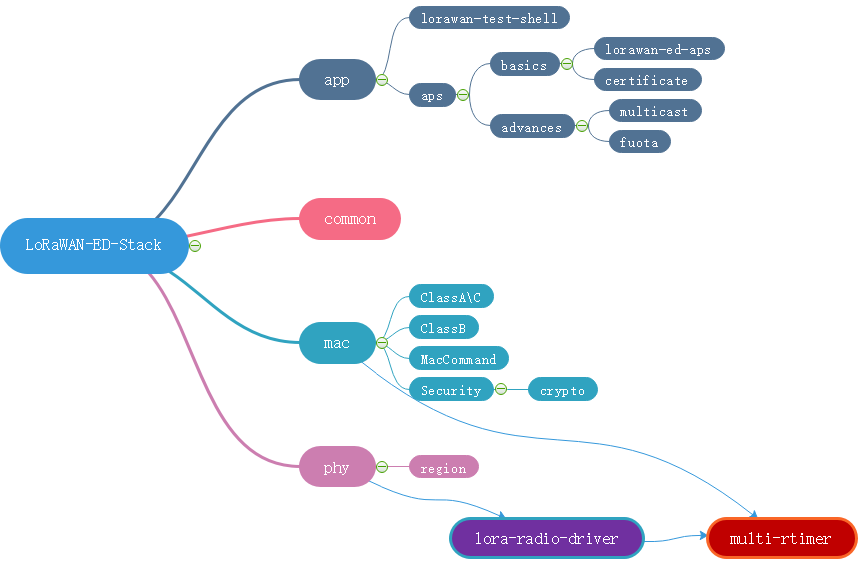
lorawan-ed-stack软件包使用了lora-radio-driver软件包作为LoRaWAN的phy层，在使用lorawan-ed-stack软件包前，建议先查看《LoRa-Radio-Driver软件包使用说明》
RT-Thread PM2.0组件设计详见rt-thread官方作者非常详细的系列文章
- [实践：RT-Thread PM管理实战 系列](https://club.rt-thread.org/ask/article/2282.html)
- [进阶：RT-Thread精通PM功耗调优 系列](https://club.rt-thread.org/ask/article/2296.html)
2.1. 1.1 准备工作
1.1.1 所需硬件
-
LoRa模块转接板(LRS101)
RF评估板
电流测试仪器
STM32功耗测试工具 STM32CubeMonitor-Power 与 STM32L562E-DK
1.1.2 所需开发工具
IDE开发工具
3. 2 LoRaWAN Class A终端设备的低功耗设计
RT-Thread PM2.0组件的整体设计思想是PM组件让系统(MCU)尽可能多处于睡眠状态（最低功耗状态），用户业务需要干活的时候，用户主动请求系统【不睡眠】(rt_pm_module_request)，并且在事情处理完成后，主动释放(rt_pm_module_release)，【允许】系统睡眠。
基于RT-Thread PM2.0组件，LoRaWAN Class A低功耗设计这里涉及到三个软件包lorawan-ed-stack、lora-radio-driver、multi-rtimer，具体如下所示
注: 如果使用RT-Studio 2.1.0版本创建项目，在其生成的工程模板中，pm.c、pm.h非最新PM2.0版本代码，需要更新为RT-Thread master 的pm.c、pm.h（PM2.0版本）
3.1. 2.1 lorawan-ed-stack低功耗处理
LoRaWAN 应用层低功耗处理如下
/**
* @brief lorawan_ed_app_thread_entry
* @param void * parameter
* @retval None
*/
void lorawan_ed_app_thread_entry(void* parameter)
{
rt_uint32_t ev;
LORAWAN_ED_DEBUG_LOG(LORAWAN_ED_STACK_DEBUG_SHELL_TEST, LOG_LVL_INFO, "LORAMAC_VERSION: %02X.%02X.%02X.%02X", (uint8_t)(__LORA_MAC_VERSION >> 24), (uint8_t)(__LORA_MAC_VERSION >> 16), (uint8_t)(__LORA_MAC_VERSION >> 8), (uint8_t)__LORA_MAC_VERSION);
rt_event_init(&ev_lorawan_apl, "ev_lorawan_apl", RT_IPC_FLAG_PRIO);//RT_IPC_FLAG_FIFO);
if( auto_periodic_tx_enable )
{
/* start to join after powerup */
rt_event_send(&ev_lorawan_apl, EV_LORAWAN_APL_START_JOIN_NETWORK);
}
while (1)
{
if (rt_event_recv(&ev_lorawan_apl, (EV_LORAWAN_APL_START_JOIN_NETWORK |
EV_LORAWAN_APL_REJOIN_NETWORK |
EV_LORAWAN_APL_PERIODIC_TX_DATA),
( RT_EVENT_FLAG_OR | RT_EVENT_FLAG_CLEAR ),
RT_WAITING_FOREVER, &ev) == RT_EOK)
{
#ifdef RT_USING_PM
rt_pm_module_request(PM_LORA_APP_ID, PM_SLEEP_MODE_NONE);
lorawan_ed_app_process(ev);
rt_pm_module_release(PM_LORA_APP_ID, PM_SLEEP_MODE_NONE);
#else
lorawan_ed_app_process(ev);
#endif
}
}
}
LoRaWAN mac层低功耗处理如下
LoRaMac.c
void loramac_thread_entry(void* parameter)
{
rt_uint32_t ev;
while(1)
{
if (rt_event_recv(&loramac_event, EV_LORAMAC_PROCESS_NOTIFY,
RT_EVENT_FLAG_OR | RT_EVENT_FLAG_CLEAR,
RT_WAITING_FOREVER, &ev) == RT_EOK)
{
#ifdef RT_USING_PM
rt_pm_module_request(PM_MAC_ID, PM_SLEEP_MODE_NONE);
LoRaMacProcess();
rt_pm_module_release(PM_MAC_ID, PM_SLEEP_MODE_NONE);
#else
LoRaMacProcess();
#endif
}
}
}
3.2. 2.2 lora-radio-driver低功耗处理
lora-radio低功耗处理如下
lora-radio-sx126x.c
static void lora_radio_thread_entry(void* parameter)
{
rt_uint32_t ev;
while(1)
{
if (rt_event_recv(&lora_radio_event, EV_LORA_RADIO_DIO_IRQ_FIRED,
RT_EVENT_FLAG_OR | RT_EVENT_FLAG_CLEAR,
RT_WAITING_FOREVER, &ev) == RT_EOK)
{
#ifdef RT_USING_PM
rt_pm_module_request(PM_RADIO_ID, PM_SLEEP_MODE_NONE);
RadioIrqProcess();
rt_pm_module_release(PM_RADIO_ID, PM_SLEEP_MODE_NONE);
#else
RadioIrqProcess();
#endif
}
}
}
3.3. 2.3 multi-rtimer低功耗处理
multi-rtimer RTC驱动层低功耗处理如下
hw_rtc_stm32.c
void rtc_set_alarm( uint32_t timeout )
{
// We don't go in Low Power mode for timeout below MIN_ALARM_DELAY
if( ( int64_t )( MIN_ALARM_DELAY + McuWakeUpTimeCal ) < ( int64_t )( timeout - rtc_get_timer_elapsed_time( ) ) )
{
rt_pm_module_release(PM_BOARD_ID, PM_SLEEP_MODE_NONE);
}
else
{
rt_pm_module_request(PM_BOARD_ID, PM_SLEEP_MODE_NONE);
}
rtc_start_alarm( timeout );
}
3.4. 2.4 STM32L4平台相关外设的低功耗处理
LoRaWAN Class A低功耗终端设备（LSD4RF-TEST2002[STM32L4] ）当前主要使用了STM32L4 SPI3（LoRa模块使用）、Usart2（日志输出）、RTC(LoRaWAN\LoRa使用)、低频晶振(LSE)、激活模式\STOP 2模式
2.4.1 增加STM32L4平台的PM所需硬件驱动
基于STM32L4平台的PM2.0硬件驱动主要使用到了 drv_pm.c 、drv_lptim.c、drv_lptim.h、drv_clk.c。
注: 如果使用RT-Studio 2.1.0版本创建项目，在其生成的工程模板中，未包含drv_pm.c 、drv_lptim.c、drv_lptim.h，可以直接从RT-Thread master\bsp\stm32\libraries\HAL_Drivers拷贝过来
在RT-Studio 2.1.0生成的 drv_common.h 中，增加<rtdevice.h>头文件
/*drv_common.h*/
#include <rtdevice.h>
drv_clk.c根据需求增加不同系统时钟频率设置等
drv_pm.c
3.1 新增进入Deep Sleep前，调用pm_deep_sleep_deinit()
__WEAK void pm_deep_sleep_deinit(void)
{
SPI_HandleTypeDef hspi = {.Instance = SPI3}; // LoRa Radio SPI
UART_HandleTypeDef huart = {.Instance = USART2 }; // Shell UART
HAL_SPI_MspDeInit(&hspi);
HAL_UART_MspDeInit(&huart);
SX126xIoDeInit();
rt_pm_disable_dbgmcu();
}
3.2 新增退出Deep Sleep后，首先调用pm_deep_sleep_reinit()
__WEAK void pm_deep_sleep_reinit(void)
{
SPI_HandleTypeDef hspi = {.Instance = SPI3}; // LoRa Radio SPI
UART_HandleTypeDef huart = {.Instance = USART2 }; // Shell UART
HAL_SPI_MspInit(&hspi);
HAL_UART_MspInit(&huart);
}
/**
* This function will put STM32L4xx into sleep mode.
*
* @param pm pointer to power manage structure
*/
static void sleep(struct rt_pm *pm, uint8_t mode)
{
switch (mode)
{
// ...
case PM_SLEEP_MODE_DEEP:
pm_deep_sleep_deinit();
/* Enter STOP 2 mode */
HAL_PWREx_EnterSTOP2Mode(PWR_STOPENTRY_WFI);
/* Re-configure the system clock */
SystemClock_ReConfig(pm->run_mode);
pm_deep_sleep_reinit();
break;
}
// ...
}
2.3.2 STM32L4低功耗相关的引脚配置
这里采用STM32CubeMX自动生成的文件(HAL_UART_MspDeInit\HAL_UART_MspReInit)，然后根据实际所需硬件设计最优的GPIO配置。
串口HAL_UART_MspDeInit处理如下
/**
* @brief UART MSP De-Initialization
* This function freeze the hardware resources used in this example
* @param huart: UART handle pointer
* @retval None
*/
void HAL_UART_MspDeInit(UART_HandleTypeDef* huart)
{
if(huart->Instance==USART2)
{
/* USER CODE BEGIN USART2_MspDeInit 0 */
/* USER CODE END USART2_MspDeInit 0 */
/* Peripheral clock disable */
__HAL_RCC_USART2_CLK_DISABLE();
/**USART2 GPIO Configuration
PA2 ------> USART2_TX
PA3 ------> USART2_RX
*/
HAL_GPIO_DeInit(GPIOA, GPIO_PIN_2|GPIO_PIN_3);
/* USER CODE BEGIN USART2_MspDeInit 1 */
/* USER CODE END USART2_MspDeInit 1 */
}
}
SPI外设HAL_SPI_MspDeInit处理如下
/**
* @brief SPI MSP De-Initialization
* This function freeze the hardware resources used in this example
* @param hspi: SPI handle pointer
* @retval None
*/
void HAL_SPI_MspDeInit(SPI_HandleTypeDef* hspi)
{
if(hspi->Instance==SPI3)
{
/* USER CODE BEGIN SPI3_MspDeInit 0 */
/* USER CODE END SPI3_MspDeInit 0 */
/* Peripheral clock disable */
__HAL_RCC_SPI3_CLK_DISABLE();
/**SPI3 GPIO Configuration
PC10 ------> SPI3_SCK
PC11 ------> SPI3_MISO
PC12 ------> SPI3_MOSI
*/
HAL_GPIO_DeInit(GPIOC, GPIO_PIN_10|GPIO_PIN_11|GPIO_PIN_12);
/* USER CODE BEGIN SPI3_MspDeInit 1 */
GPIO_InitTypeDef GPIO_InitStruct = {0};
GPIO_InitStruct.Pin = GPIO_PIN_11;
GPIO_InitStruct.Mode = GPIO_MODE_OUTPUT_PP;
GPIO_InitStruct.Pull = GPIO_PULLDOWN;
GPIO_InitStruct.Speed = GPIO_SPEED_FREQ_LOW;
HAL_GPIO_Init(GPIOC, &GPIO_InitStruct);
/* USER CODE END SPI3_MspDeInit 1 */
}
}
4. 3 LoRaWAN Class A终端设备的应用示例
4.1. 2.1 使能PM组件
在”RT-Thread Settings”使能”低功耗”
或者”RT-Thread Components” -> “ Device Drivers” -> “USing Power Management device drivers”使能PM组件。
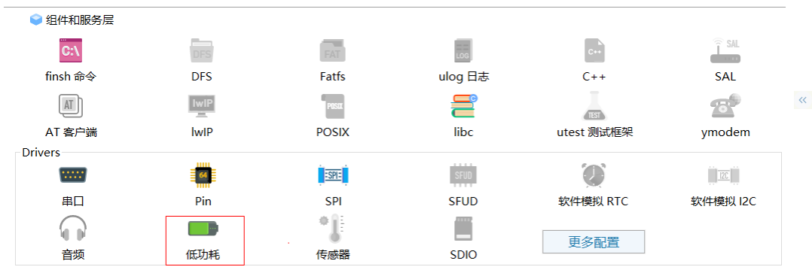
2.1.1 设置 IDLE_THREAD_STACK_SIZE
使用PM组件，要求IDLE_THREAD_STACK_SIZE大于256 Byte
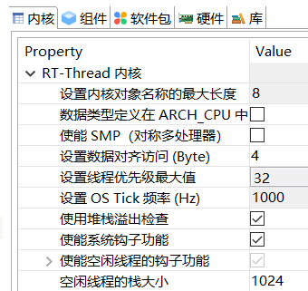
4.2. 2.2 使能lorawan-ed-stack软件包
使能lorawan-ed-stack软件包，根据接入的LoRaWAN网络，配置lorawan-ed-stack协议栈的相关参数。
详细查看
基于ART-Pi与LRS007的LoRaWAN_ED_Stack软件包应用笔记
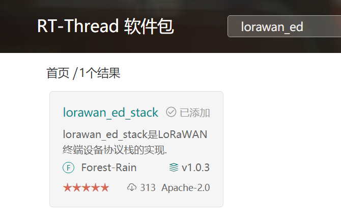
Regional参数
CN470同频
上行=下行(RX1)
475.3、475.5、475.7、475.9、476.1、476.3、476.5、476.7
或者CN470(异频)
上行
475.1、475.3、475.5、475.7、475.9、476.1、476.3、476.5
下行（RX1）
505.1、505.3、505.5、505.7、505.9、505.1、505.3、505.5
2.1.1 lora-radio-driver软件包
使能lorawan-ed-stack软件包，会自动使能lora-radio-driver软件包。然后根据实际使用的LoRa模块，配置lora-radio-driver参数。
具体参考
基于APT-Pi与LRS007的LoRa-Radio-Driver软件包应用笔记
2.1.1 multi-rtimer软件包
LoRaWAN Class A低功耗应用需要使用低功耗的定时器外设，当前定时服务使用的是multi-rtimer软件包，其依赖的是STM32硬件RTC。
具体参考 multi-rtimer软件包
4.3. 2.3 STM32CubeMX设置
2.3.1 配置STM32L4的LSE与RTC
multi_rtimer软件包使用硬件RTC，同时为了获取更高时间精度，以满足Class A设备通信要求，需要使用低频晶振（LSE）。
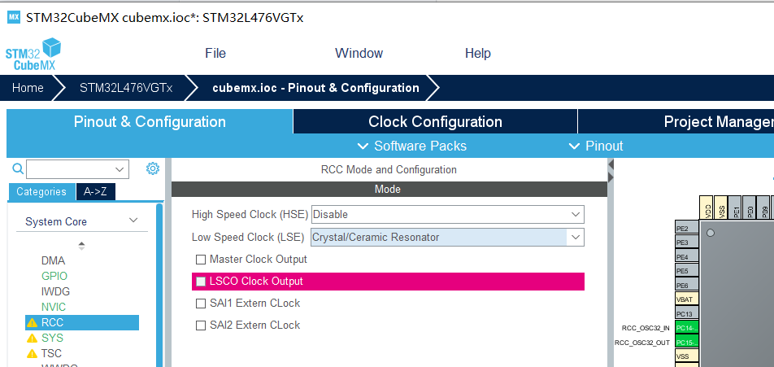
RCC使能LSE
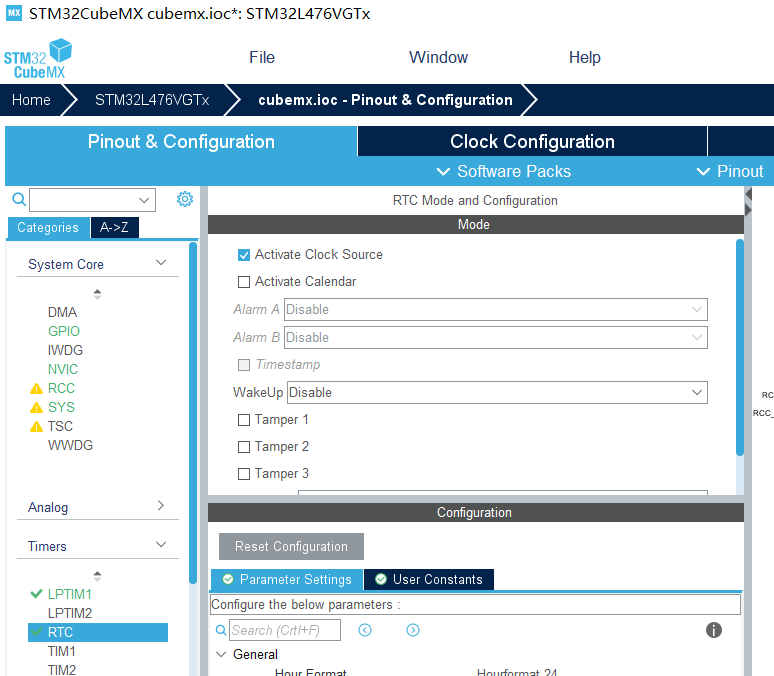
使能RTC
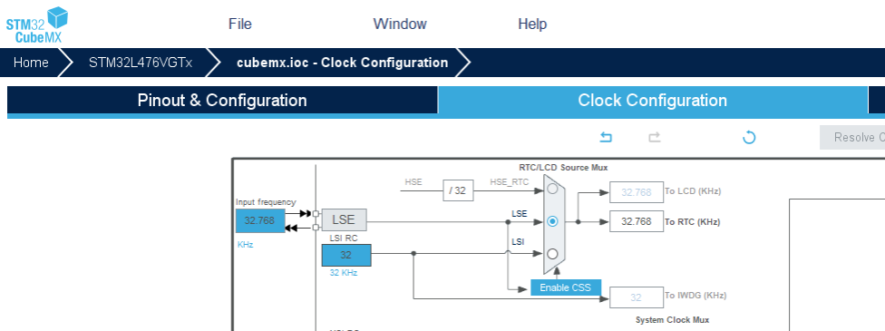
RTC时钟源设置为LSE
2.3.2 配置LPTIM1
STM32L4平台，RT-Thread PM2.0组件使用了LPTIM1来提供Tickless机制。
注：当前在drv_lptim.c驱动里面已经默认实现LPTIM1的开启，因此此处也可以忽略该步骤。
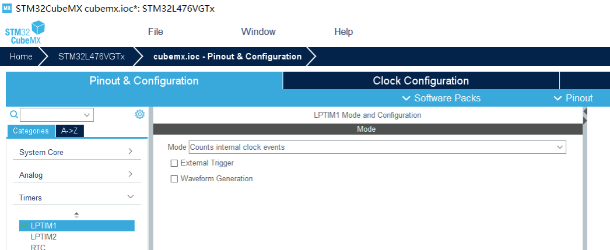
使能LPTIM1
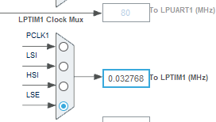
LPTIM1时钟源设置为LSE，也可以设置来自LSI
5. 4 功耗测试结果
将 STM32L562E-DK的JP7接口连接到测试 LSD4RF-TEST2002[STM32L4] 的J2接口,如下图所示
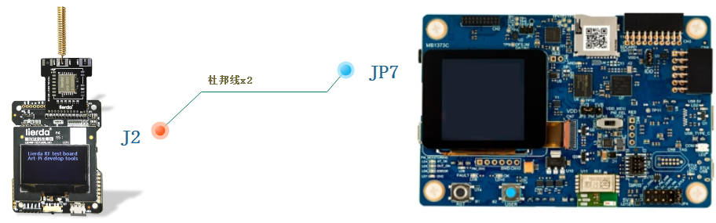
搭建LSD4RF-TEST2002[STM32L4]功耗测试台
5.1. 4.1 OTAA入网功耗测试
设备上电后，随机延时后，开始入网
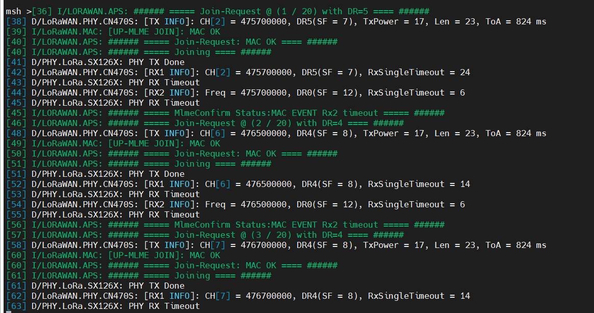
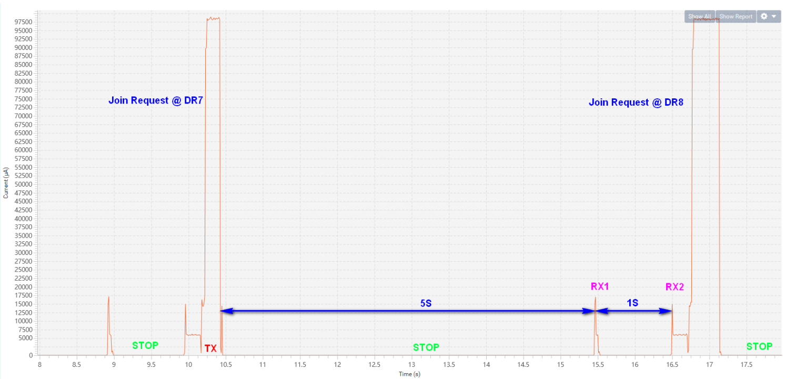
设备OTAA入网
5.2. 4.2 LoRaWAN数据通信功耗测试
LoRaWAN数据通信，无下行数据情况
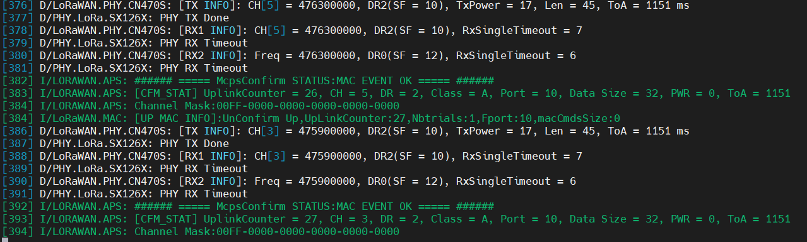)
)
周期性Class A数据上报(无下行数据)
)单次Class A数据通信功耗曲线(无下行数据)
LoRaWAN数据通信，有下行数据情况
6. 5 参考
RT-Thread操作系统
lora-radio-driver软件包
multi-rtimer软件包
低功耗RTC定时模块
lorawan-ed-stack软件包
lorawan终端设备协议栈
ART-Pi LoRa开发套件 产品介绍
基于ART-Pi与LRS007的LoRaWAN_ED_Stack软件包应用笔记
基于APT-Pi与LRS007的LoRa-Radio-Driver软件包应用笔记